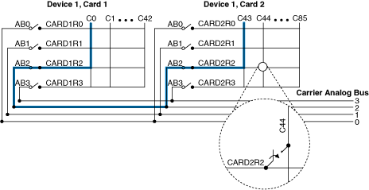
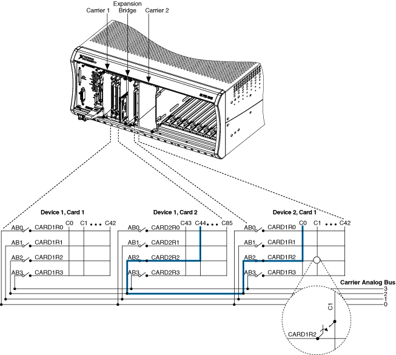

有关 NI SwitchBlock 载体上的模拟总线以及如何使用它的信息，请参阅以下部分。
每个载体都有一个模拟总线，您可以使用它在构成多卡设备的卡之间、同一载体中的设备之间、或在安装NI 2806 扩展桥接器时不同载体中的设备之间建立连接。
NI SwitchBlock 设备包含用于连接到载体上的模拟总线的模拟总线通道。要将卡上的一行连接到载体上的模拟总线，请将该行连接到设备上相同编号的模拟总线通道。
|
注意 载波模拟总线不是软件中的通道。要将您的设备连接到模拟总线，请将一行连接到模拟总线通道。 |
|
注意 1-wire 卡上的模拟总线通道连接到模拟总线上的一条线路，而 2-wire 卡上的模拟总线通道连接到模拟总线上的两条线路。 |
因为一个运营商中的所有卡共享模拟总线，所以多个设备不能同时连接到同一条模拟总线，除非它们都是相同的线模式，并且您允许多个设备使用模拟总线共享启用连接到相同的模拟总线属性或NISWITCH_ATTR_ANALOG_BUS_SHARING_ENABLE属性。
|
注意 启用和禁用模拟总线共享可防止用户在使用即时VI/函数时无意中连接到相同的模拟总线线路，但在使用niSwitch 继电器控制VI 或niSwitch_RelayControl函数直接操作继电器时不会提供额外的保护. 当多个 NI SwitchBlock 设备连接到模拟总线时，NI 不建议直接操作继电器。 |
您可以使用模拟总线通道在组成多卡设备的卡之间路由信号。下图说明了在由两张卡组成的多卡设备中连接通道c0和c43的信号连接。

完成以下步骤以连接同一设备中的卡之间的信号：
|
注意 您可以将通道设置为保留用于路由，仅当它尚未使用且其模拟总线共享启用属性设置为 FALSE 时。 |
您可以使用模拟总线以相同的接线模式在多个 NI SwitchBlock 设备之间路由信号，无论这些设备安装在同一机层中还是安装在由 NI 2806 扩展桥连接的不同机层中。下图显示了将安装在一个机层中的多卡设备中的通道c44连接到安装在通过 NI 2806 扩展桥连接的相邻机层中的单卡设备中的通道c0的信号连接。

完成以下步骤以在多个设备之间连接信号：
|
注意 只有在相应的模拟总线线路尚未使用时，才能共享模拟总线通道。1 线设备上的模拟总线通道每个都连接到一条模拟总线，而 2 线设备上的模拟总线通道每个都连接到两条线。 |
|
注意 共享模拟总线的通道不能保留用于路由，已保留用于路由的通道不能共享模拟总线。 |
 提交有关此主题的反馈。
提交有关此主题的反馈。 访问ni.com/support以获得技术支持。
访问ni.com/support以获得技术支持。